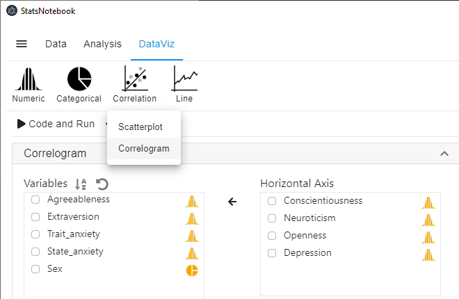
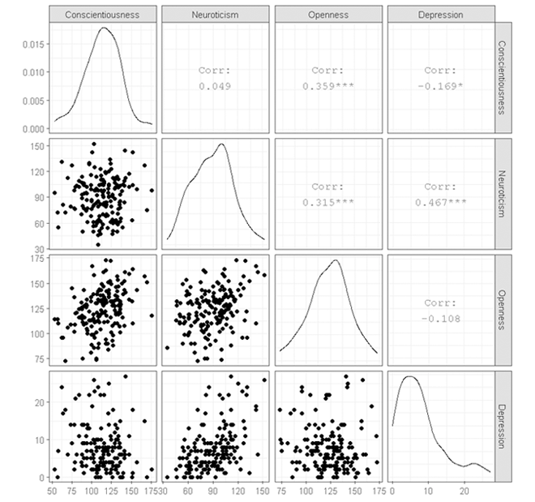
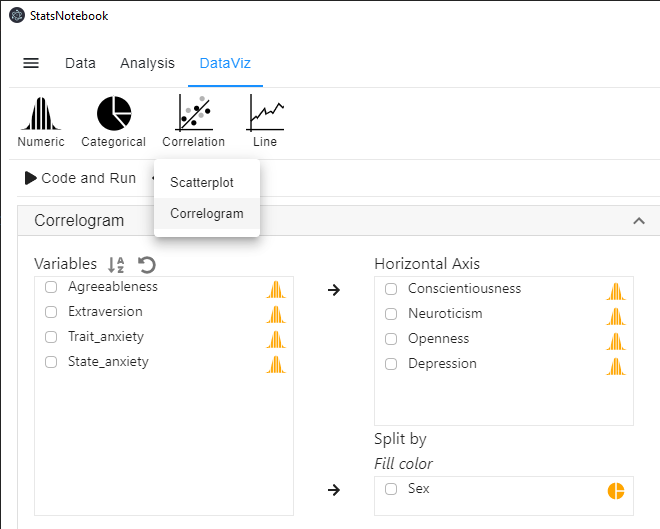

StatsNotebook
Correlogram is a type of chart that visualise the pairwise association between variables. StatsNotebook uses the ggpairs() function from the GGally library to build correlogram. A publication ready correlogram can be built within a few minutes with StatsNotebook.
We use the built-in Personality dataset in this example. This dataset can be loaded into StatsNotebook using instruction here or can be downloaded from here.
In this example, we will build a simple correlogram to visualise the relationship between four variables (three personality variables: Conscientiousness, Neuroticism, Openness and one mental health variable: Depression). We then build a correlogram by Sex (Male and Female.)
Correlogram (Scatterplot matrix)
- Click DataViz at the top
- Click Correlation
- Select Correlogram from the menu
- In the Correlogram panel, select Conscientiousness, Neuroticism, Openness, and Depression from the Variables (left) to Horizontal Axis (right).

R Codes
library(GGally)
currentDataset %>%
drop_na(Conscientiousness, Neuroticism, Openness, Depression) %>%
select(Conscientiousness, Neuroticism, Openness, Depression) %>%
ggpairs(progress = FALSE)+
scale_fill_brewer(palette = "Set2")+
scale_color_brewer(palette = "Set2")+
theme_bw(base_family = "sans")
"Chan, G. and StatsNotebook Team (2020). StatsNotebook. (Version 0.1.0) [Computer Software]. Retrieved from https://www.statsnotebook.io"
"R Core Team (2020). The R Project for Statistical Computing. [Computer software]. Retrieved from https://r-project.org"
"Wickham H (2016). ggplot2: Elegant Graphics for Data Analysis. Springer-Verlag New York. ISBN 978-3-319-24277-4, https://ggplot2.tidyverse.org"
Output from the above R codes

Correlogram (Scatterplot matrix) by group
- Click DataViz at the top
- Click Correlation
- Select Correlogram from the menu
- In the Correlogram panel, select the Conscientiousness, Neuroticism, Openness, and Depression from the Variables (left) to Horizontal Axis (right).
- Select Sex to Split by: Fill color (right).
- Sex is a categorical variable. If it is not yet coded as factor, you will need to manually covert it into a factor variable.

R Codes
library(GGally)
currentDataset %>%
drop_na(Conscientiousness, Neuroticism, Openness, Depression, Sex) %>%
select(Conscientiousness, Neuroticism, Openness, Depression, Sex) %>%
ggpairs(progress = FALSE,
ggplot2::aes(alpha = 0.65, color = Sex))+
scale_fill_brewer(palette = "Set2")+
scale_color_brewer(palette = "Set2")+
theme_bw(base_family = "sans")
"Chan, G. and StatsNotebook Team (2020). StatsNotebook. (Version 0.1.0) [Computer Software]. Retrieved from https://www.statsnotebook.io"
"R Core Team (2020). The R Project for Statistical Computing. [Computer software]. Retrieved from https://r-project.org"
"Wickham H (2016). ggplot2: Elegant Graphics for Data Analysis. Springer-Verlag New York. ISBN 978-3-319-24277-4, https://ggplot2.tidyverse.org"
Output from the above R codes
")
Citation
Chan, G. and StatsNotebook Team (2020). StatsNotebook. [Computer Software]. Retrieved from https://www.statsnotebook.io
R Core Team (2020). The R Project for Statistical Computing. [Computer software]. Retrieved from https://r-project.org
Wickham H (2016). ggplot2: Elegant Graphics for Data Analysis. Springer-Verlag New York. ISBN 978-3-319-24277-4, https://ggplot2.tidyverse.org